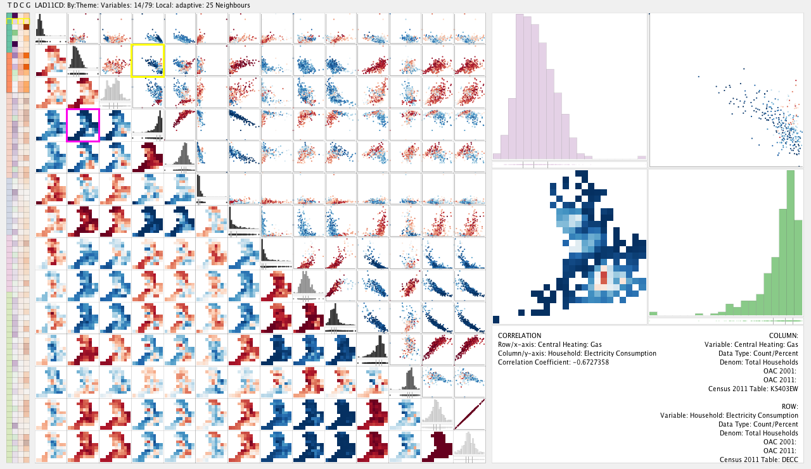

About
information+visualization is a cross-cutting research theme at the Potsdam University of Applied Sciences. Researchers that focus on information+visualization explore the potential of interactive and visual representations to help people make sense of large data sets and navigate complex information spaces.
People
Researchers
Activities
- 1 Oct 2014 – Invited talk
Visualizing Energy Consumption Across Scale and Space, Sarah Goodwin, City University London.  Can multivariate data be compared across multiple dimensions of scale and geography? Sarah Goodwin presents a theoretical framework and prototype visualization designs for multivariate data comparison. Specializing in the analysis of spatial data and geovisualization, Sarah's research investigates the classification of variables for energy consumer profiling. In this talk she will show some of her work investigating geodemographics with energy consumption characteristics and prototype designs for smart home data analysis for energy companies.
Doors 6:30pm, Begin 7pm. Wissenschaftsetage im Bildungsforum, Am Kanal 47, 14467 Potsdam. - 29 Oct 2014 – Mini conference
Making Emotions Visible
Courses
Winter 2014/2015
- Communicating Scientific Insights
- Doing with Data
Visualisierung urbaner Daten für Veränderung - From Reading to Exploring
Visuelles Geschichtenerzählen im Datenjournalismus - Visual Interfacedesign: Grundlagen
- Visualisierung kultureller Sammlungen
Summer 2014
- Emotionen sichtbar machen
- Google Maps and beyond
Karten für Desktop, Mobile und Print - InfoVis Reading Group
Winter 2013/2014
- New ways for visual pattern recognition
- Urbane Ebenen: Mobilität
- Visuelle Informationsexploration
Projects
Publications
2014
-
Weaving a Carpet from Log Entries: a Network Security Visualization Built with Co-Creation
J Landstorfer, I Herrmann, JE Stange, M Dörk, R Wettach. VAST 2014. To appear. Proceedings of IEEE Symposium On Visual Analytics Science And Technology, Nov 2014.
We created a pixel map for multi-variate data based on an analysis of the needs of network security engineers. Parameters of a log record are shown as pixels and these pixels get stacked to represent a record. This allows a broad view of a data set on one screen while staying very close to the raw data and to expose common and rare patterns of user behavior through the visualization itself (the “Carpet”). Visualizations that immediately point to areas of suspicious activity without requiring extensive fltering, help network engineers investigating unknown computer security incidents. Most of them, however, have limited knowledge of advanced visualization techniques, while many designers and data scientists are unfamiliar with computer security topics. To bridge this gap, we developed visualizations together with engineers, following a co-creative process. We will show how we explored the scope of the engineers' tasks and how we jointly developed ideas and designs. Our expert evaluation indicates that this visualization helps to scan large parts of log fles quickly and to defne areas of interest for closer inspection. -
Isoscope - Visualizing temporal mobility variance with isochrone maps
F Gortana, S Kaim, M von Lupin, T Nagel. Poster at VIS 2014. To appear. Poster Abstracts of IEEE VIS 2014.
Isochrone maps are an established method to depict areas of equal travel time, and have been used in transportation planning since the early 20th century. In recent years, interactive isochrone maps allowed users to select areas of interest, or explore temporal mobility patterns for different modes of transport. However, conventional isochrone maps depict one traffic situation at a time. Our visualization approach unifies isochrone maps with time-varying travel data, and instead of showing multiple isolines for different travel times, we show multiple isolines for different times of day in order to reveal time-dependent spatial travel variance. In this paper, we present Isoscope, a web application that provides an interactive map for casual exploration of urban mobility patterns. Through its aesthetic visual form and its simple interface we strive to support people casually investigating travel time in their own city. We will describe our design goals, elaborate on the design and implementation of our prototype, and discuss limitations and future extensions of the system. -
Culturegraphy, Visualizing Cultural Network Dynamics
K Albrecht, M Dörk, B Müller. AHCN 2014. Presented at Arts, Humanities, and Complex Networks – 4th Leonardo satellite symposium at NetSci2014, June 2014.
Culturegraphy visualizes cultural information exchange over time. Treating cultural works as nodes and influences as directed edges, the visualization of these cultural networks can provide new insights into the rich interconnections of cultural development. The graphics represent complex relationships of movie references by combining macro views summarizing 100 years of movie influences with micro views providing a close-up look at the embedding of individual movies. The macro view shows the rise of the self-referential character of postmodern cinema, while the micro level illustrates differences between individual movies, when they were referenced and by whom. The visualizations provide views that are closer to the real complexity of the relationships than aggregated views or rankings could do. -
Touching Transport – A Case Study on Visualizing Metropolitan Public Transit on Interactive Tabletops
T Nagel, M Maitan, E Duval, A Vande Moere, J Klerkx, K Kloeckl, C Ratti. AVI 2014. Proceedings of the International Working Conference on Advanced Visual Interfaces, ACM, pp. 281-288, May 2014.
Due to recent technical developments, urban systems generate large and complex data sets. While visualizations have been used to make these accessible, often they are tailored to one specific group of users, typically the public or expert users. We present Touching Transport, an application that allows a diverse group of users to visually explore public transit data on a multi-touch tabletop. It provides multiple perspectives of the data and consists of three visualization modes conveying tempo-spatial patterns as map, time-series, and arc view. We exhibited our system publicly, and evaluated it in a lab study with three distinct user groups: citizens with knowledge of the local environment, experts in the domain of public transport, and non-experts with neither local nor domain knowledge. Our observations and evaluation results show we achieved our goals of both attracting visitors to explore the data while enabling gathering insights for both citizens and experts. We discuss the design considerations in developing our system, and describe our lessons learned in designing engaging tabletop visualizations. -
Monadic Exploration: Seeing the Whole Through Its Parts
M Dörk, R Comber, M Dade-Robertson. CHI 2014. Proceedings of the SIGCHI Conference on Human Factors in Computing Systems, ACM, pp. 1535–1544, April 2014.
Monadic exploration is a new approach to interacting with relational information spaces that challenges the distinction between the whole and its parts. Building on the work of sociologists Gabriel Tarde and Bruno Latour we turn to the concept of the monad as a useful lens on online communities and collections that expands the possibility for creating meaning in their navigation. While existing interfaces tend to emphasize either the structure of the whole or details of a part, monadic exploration brings these opposing perspectives closer together in continuous movements between partially overlapping points of view. We present a visualization that reflects a given node's relative position within a network using radial displacements and visual folding. To investigate the potential of monadic exploration we report on an iterative design process of a web-based visualization of a highly cross-referenced book and its six-month deployment. -
Traffic Origins: A Simple Visualization Technique to Support Traffic Incident Analysis
A Anwan, T Nagel, C Ratti. PacificVis 2014 In Proceedings of the Pacific Visualization Symposium 2014, IEEE, pp. 316 – 319, March 2014.
Traffic incidents such as road accidents and vehicle breakdowns are a major source of travel uncertainty and delay, but the mechanism by which they cause heavy traffic is not fully understood. Traffic management controllers are tasked with routing repair and clean up crews to clear the incident and often have to do so under time pressure and with imperfect information. To aid their decision making and help them understand how past incidents affected traffic, we propose Traffic Origins, a simple method to visualize the impact road incidents have on congestion. Just before a traffic incident occurs, we mark the incident location with an expanding circle to uncover the underlying traffic flow map and when it ends, the circle recedes. This not only directs attention to upcoming events, but also allows us to observe the impact traffic incidents have on vehicle flow in the immediate vicinity and the cascading effect multiple incidents can have on a road network. We illustrate this technique using road incident and traffic flow data from Singapore. -
Exploring the Promises and Potentials of Visual Archive Interfaces
KL Chen, M Dörk, M Dade-Robertson. iConference 2014. Proceedings of the 2014 iConference, pp. 735-741, March 2014.
A photo archive contains diverse narratives that only get partially exposed in digital interfaces. In this paper we explore a potential framework for archivists and designers to create photo archive interfaces that are sensitive to the ethos and social context of its content. We outline our approach to engaging with archival projects and present the results of a pilot workshop, which raised a range of complex questions about the design of visual interfaces. Our aim is to practically and conceptually expand how a visual interface would let a visitor access, explore, and interpret the contents of an archive. To do this we are interested in the different associations that people weave between the artefacts of an archive. -
Visually Exploring Books Along Their Subject Headings
C Coljee-Gray, M Dörk, S Carpendale. iConference 2014. Proceedings of the 2014 iConference, pp. 729-734, March 2014.
We present a visualization of subject headings that typically accompany books as flat textual metadata. The purpose of the visualization is twofold: first to expose the implicit structure in subject headings as an overview of a library collection and second to present a visual web of keywords to invite exploration of books. Taking a tag cloud as a starting point, the visualization extends it to a networked tag cloud that respects the hierarchy that is implicit in subject headings. By allowing an information seeker to successively build a subject filter, while seeing the results at each step, we hope to improve the searcher's orientation in a comprehensive book collection
2013
-
Interaktive Karten und Geovisualisierungen
F Heidmann. Interaktive Infografiken 2013. In: Weber, W., Burmester, M. & Tille, R. (Eds.): Interaktive Infografiken. Berlin: Springer-Verlag, pp. 39-69. -
A Visual Survey of Arc Diagrams
T Nagel, E Duval. Poster at VIS 2013. Poster Abstracts of IEEE VIS 2013.
Surveys are a common way of providing an overview over a family of visualization techniques. In this poster we focused on arc diagrams, which are an established method to visualize relations between nodes in a simple path graph, and are laid out in one dimension. We collected a wide range of examples of arc diagrams with different characteristics. Following Jurgensmann and Schulz’s poster on tree visualizations we present our collection as a visual survey. As a result, our poster acts as visual reference and as inspirational source. -
Unfolding – A Library for Interactive Maps
T Nagel, J Klerkx, A Vande Moere, E Duval. SouthCHI 2013. SouthCHI 2013: Human Factors in Computing and Informatics, LNCS, volume 7946, pp. 497-513, Springer, July 2013. Best Presentation Award.
Visualizing data with geo-spatial properties has become more important and prevalent due to the wide spread dissemination of devices, sensors, databases, and services with references to the physical world. Yet, with existing tools it is often difficult to create interactive geovisualizations tailored for a particular domain or a specific dataset. We present Unfolding, a library for interactive maps and data visualization. Unfolding provides an API for designers to quickly create and customize geo-visualizations. In this paper, we describe the design criteria, the development process, and the functionalities of Unfolding. We demonstrate its versatility in use through a collection of examples. Results from a user survey suggests programmers find the library easy to learn and to use. -
Indexicality and Visualization: Exploring Analogies with Art, Cinema and Photography
T Schofield, M Dörk, M Dade-Robertson. C&C 2013. Proceedings of the Conference on Creativity and Cognition, ACM, pp. 175-184, June 2013.
In this paper we offer a critical discussion of data visualization by adapting theories of indexicality as discussed in semiotics and art history. An indexical statement is broadly one whose meaning is dependent on context. We examine how indexicality has informed practices in cinema, photography, and contemporary art and make comparisons with data visualization. Specifically, we explore how these analogies can result in generative concepts that can inform the design and study of data visualization. -
Critical InfoVis: Exploring the Politics of Visualization
M Dörk, P Feng, C Collins, S Carpendale. alt.chi 2013. Extended Abstracts of the SIGCHI Conference on Human Factors in Computing Systems, ACM, pp. 2189-2198, May 2013
As information visualization is increasingly used to raise awareness about social issues, difficult questions arise about the power of visualization. So far the research community has not given sufficient thought to how values and assumptions pervade information visualization. Taking engaging visualizations as a starting point, we outline a critical approach that promotes disclosure, plurality, contingency, and empowerment. Based on this approach, we pose some challenges and opportunities for visualization researchers and practitioners. -
Accentuating Visualization Parameters to Guide Exploration
M Dörk, H Lam, O Benjelloun. Work-in-Progress at CHI 2013. Extended Abstracts of the SIGCHI Conference on Human Factors in Computing Systems, ACM, pp. 1755-1760, May 2013.
We present a new method for displaying visualization parameters to guide casual data exploration. When visualizing datasets with large parameter spaces it can be difficult to move between data views. Building on social navigation and degree-of-interest visualization, we propose the concept of accentuation as the selection and emphasis of visualization parameters based on social and semantic signals. We describe how we designed an accentuated visualization interface, and discuss open challenges and directions for future research. -
Unfolding – A Simple Library for Interactive Maps and Geovisualizations in Processing
T Nagel, F Heidmann, E Duval, J Klerkx, A Vande Moere. GeoViz 2013. GeoViz 2013, March 6-8, Hamburg, Germany.
Many thematic maps and geovisualizations nowadays are being created by designers, journalists, and other non cartographers. Yet, with existing tools it is often difficult to create interactive data visualizations tailored for a particular domain or a specific dataset. We present Unfolding, a library to simplify the creation of interactive maps and geovisualizations. Unfolding provides an API to quickly create and customize visualization applications. In this paper, we introduce the design and functionality of our library. We demonstrate its usability through a collection of examples, and confirm the apparent need of such map library by describing its acceptance in the community.
2012
-
Sankey Arcs – Visualizing edge weights in path graphs
T Nagel, E Duval, A Vande Moere, K Kloeckl, C Ratti. Eurovis 2012. Eurovis 2012, Vienna, Austria, 5-8 June 2012, Eurovis 2012, pp. 55-59, Eurographics Association.
Arc diagrams allow exploring relations and their strength between sequential nodes. Previous solutions suffer from displaying all arcs at the center of a node, which can lead to visual obstruction. We present a new technique, which extends the arc diagram technique by laying out the weighted edges of a node adjacent to each other. The aim of our Sankey Arc technique is to improve clarity, to enable users perceiving and comparing weighted edges in path graphs. The technique is illustrated using a dataset on travel paths in a public transit network. -
Interactive Exploration of a Geospatial Network Visualization
T Nagel, E Duval, A Vande Moere. CHI 2012. Extended Abstracts of CHI 2012 the SIGCHI Conference on Human Factors in Computing Systems, ACM, pp. 557-572.
This paper presents a tabletop visualization of relations between geo-positioned locations. We developed an interactive visualization, which enables users to visually explore a geospatial network of actors. The multitouch tabletop, and the large size of the interactive surface invite users to explore the visualization in semi-public spaces. For a case study on scientific collaborations between institutions, we applied and improved several existing techniques for a walk-up-and-use system aimed at scientists for a social setting at a conference. We describe our iterative design approach, our two implemented prototypes, and the lessons learnt from their creation. We conducted user evaluation studies at the two on-location demonstrations, which provide evidence of the prototype usability and usefulness, and its support for understanding the distribution and connectivity in a geospatial network. -
Learning dashboards & learnscapes
E Duval, J Klerkx, K Verbert, T Nagel, S Govaerts, G Parra, JL Santos, B Vandeputte. EIST 2012. Educational Interfaces, Software, and Technology Workshop at ACM CHI 2012.
In this paper, we briefly present our work on applications for ‘learning analytics’. Our work ranges from dashboards on small mobile devices to learnscapes on large public displays. We capture and visualize traces of learning activities, in order to promote self-awareness and reflection, and to enable learners to define goals and track progress towards these goals. We identify HCI issues for this kind of applications. -
PivotPaths: Strolling through Faceted Information Spaces
M Dörk, N Henry Riche, G Ramos, S Dumais. InfoVis 2012. TVCG: IEEE Transactions on Visualization and Computer Graphics (Proceedings InfoVis 2012). 18(12), pages 2709-2718, Dec 2012.
We present PivotPaths, an interactive visualization for exploring faceted information resources. During both work and leisure, we increasingly interact with information spaces that contain multiple facets and relations, such as authors, keywords, and citations of academic publications, or actors and genres of movies. To navigate these interlinked resources today, one typically selects items from facet lists resulting in abrupt changes from one subset of data to another. While filtering is useful to retrieve results matching specific criteria, it can be difficult to see how facets and items relate and to comprehend the effect of filter operations. In contrast, the PivotPaths interface exposes faceted relations as visual paths in arrangements that invite the viewer to `take a stroll' through an information space. PivotPaths supports pivot operations as lightweight interaction techniques that trigger gradual transitions between views. We designed the interface to allow for casual traversal of large collections in an aesthetically pleasing manner that encourages exploration and serendipitous discoveries. This paper shares the findings from our iterative design-and-evaluation process that included semi-structured interviews and a two-week deployment of PivotPaths applied to a large database of academic publications. -
Navigating Tomorrow’s Web: From Searching and Browsing to Visual Exploration
M Dörk, C Williamson, S Carpendale. TWEB. ACM Transactions on the Web. 6(3), Article No. 13, 28 pages, Sep 2012.
We propose a new way of navigating the Web using interactive information visualizations, and present encouraging results from a large-scale Web study of a visual exploration system. While the Web has become an immense, diverse information space, it has also evolved into a powerful software platform. We believe that the established interaction techniques of searching and browsing do not sufficiently utilize these advances, since information seekers have to transform their information needs into specific, text-based search queries resulting in mostly text-based lists of resources. In contrast, we foresee a new type of information seeking that is high-level and more engaging, by providing the information seeker with interactive visualizations that give graphical overviews and enable query formulation. Building on recent work on faceted navigation, information visualization, and exploratory search, we conceptualize this type of information navigation as visual exploration and evaluate a prototype Web-based system that implements it. We discuss the results of a large-scale, mixed-method Web study that provides a better understanding of the potential benefits of visual exploration on the Web, and its particular performance challenges. -
Fluid Views: A Zoomable Search Environment
M Dörk, S Carpendale, C Williamson. AVI 2012. Proceedings of the International Conference on Advanced Visual Interfaces, ACM, pp. 233-240.
We present Fluid Views, a web-based search environment designed to bridge overview and detail by integrating dynamic queries, semantic zooming, and dual layers. The most common form of search results is long ranked and paginated lists, which are seldom examined beyond the top ten items. To support more exploratory forms of information seeking, we bring together the notion of relevance with the power of visual encoding. In Fluid Views, results portray relevance via size and detail in a dynamic top layer and semantic similarity via position on a base map. We designed Fluid Views with temporal, spatial, and content-defined base maps for both textual and visual resources, and tested our prototype system on books, blogs, and photos. Interviews with library professionals indicate the potential of Fluid Views for exploring collections and exciting directions for future research. -
Visualizing Explicit and Implicit Relations of Complex Information Spaces
M Dörk, S Carpendale, C Williamson. Information Visualization journal. Information Visualization, Sage, 11(1), pp. 5-21, Jan 2012.
In this work, we describe how EdgeMaps provide a new method for integrating the visualization of explicit and implicit data relations. Explicit relations are specific connections between entities already present in a given data set, while implicit relations are derived from multidimensional data based on similarity measures. Many data sets include both types of relations, which are often difficult to represent together in information visualizations. Node-link diagrams typically focus on explicit data connections while not incorporating implicit similarities between entities. Multidimensional scaling considers similarities between items; however, explicit links between nodes are not displayed. In contrast, EdgeMaps visualize both explicit and implicit relations by combining graph drawing and spatiatization techniques. We have applied this technique to three case studies [philosophers, painters, and musicians] and explored how integrated visualizations of explicit and implicit relations reveal novel patterns and relationships.